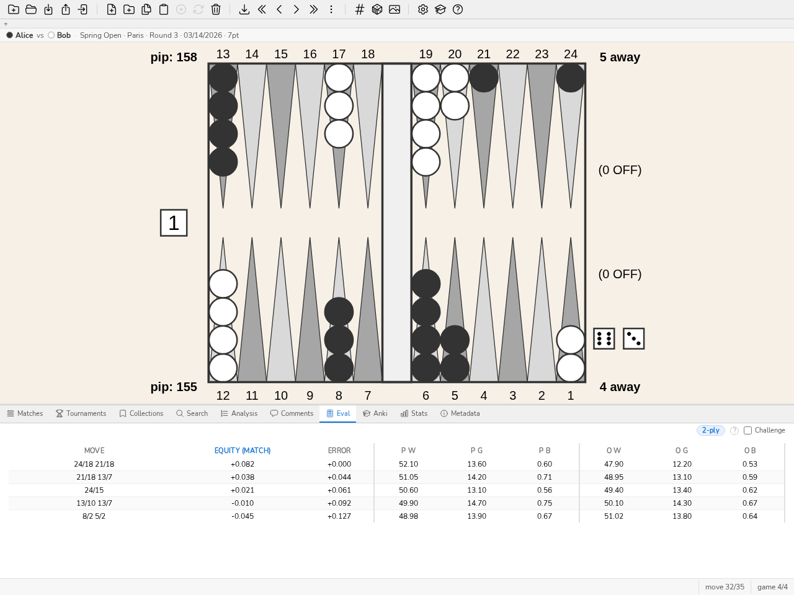

ユーザーガイド
このガイドは、blunderDB を素早く使い始めるための実践的な導入です。四つのエンドツーエンドのチュートリアルが最も一般的な使い方をカバーします。ガイドの残りの部分は、必要に応じて参照する、操作ごとのリファレンスカタログのままです。
ホーム画面
データベースを開いていないあいだ、blunderDB は空の盤ではなく四つの道を示します。
自分のマッチを取り込む——中心となる道です。ひとりでに連なります。新しいデータベース、ファイルの選択（XG、GNU Backgammon、Jellyfish、BGBlitz）、そして 取り込みの報告——「これがあなたの PR と最悪の判断です」——さらに望むなら 学習キュー。道具の約束を、説明するのではなく二分で果たします。
サンプルのデータベースを開く——3 つのマッチ、コレクション、コメント、Anki デッキ。何も持ち込まずに一通り試せます。
ガイドツアー——画面をパネルごとに一巡します。
データベースを開く——すでにお持ちの
.dbファイル。
最後に開いたデータベースは別に提示されますが、そのファイルがまだ存在する場合だけです。押すと失敗するボタンは、ボタンがないより悪いからです。
データベースを開くと画面は消えます。控えめなリンクでそのセッションのあいだ脇へどけられます。Eval パネルはデータベースなしで動くので、何も開かずに局面を並べて評価したいことがあるからです。
エンドツーエンドのチュートリアル
最初のインポート
このチュートリアルは、eXtreme Gammon のマッチファイル（.xg）から始まり、最も負けの多いポジションの一覧にたどり着きます。
データベースを作成する。ツールバーの 新規データベース ボタン（または CTRL-N）で、保存場所と名前を選びます。
.db拡張子は自動的に付加されます。マッチをインポートする。
.xgファイルを blunderDB のウィンドウにドラッグ＆ドロップします（または CTRL-I を押してから選択します）。blunderDB は形式を検出し、ポジションと XG ファイルにすでに含まれている分析（手、キューブの決断、フラグ）をインポートし、インポートが成功すると Matches パネルを表示します。注釈
blunderDB はファイルにすでにある分析をそのまま取り込むだけで、分析をやり直すことはありません。したがって XG で一度も分析されなかったマッチには、見せられるエラーがありません。設定ウィンドウの gammonNet タブで インポート後に自動解析する にチェックが入っていると、上限つきで中断できる分析のバッチが、分析のないポジションをバックグラウンドで埋めます。設定を参照してください。
マッチを見直す。マッチの行をダブルクリックする（または選択して ENTER を押す）と、最後に閲覧したポジションでレビューが開きます。LEFT/RIGHT キー（または k/j）で手を送り、PageUp/PageDown でゲームを切り替えます。
分析を読む。CTRL-L で Analysis パネルが表示されます：最善手、そのエクイティ、実際に指された手の誤差（テーブル内で強調表示）。キューブの決断では、同じキーでキューブエクイティテーブルと結論が表示されます。

マッチのレビュー中の Analysis パネル：指された手が候補手テーブル内で強調表示されています。
最大のエラーを見つける。統計パネルを開き（CTRL-D）、ダッシュボード タブへ。トップブランダー の一覧が最も高くついた10件のエラーを示し、行をクリックすると該当のポジションが分析パネルに読み込まれます。使い慣れた人には、キーボードでも同じことができます。
blコマンド（またはblunders。SPACE でコマンドラインを開きます）は、手作業で検索を組み立てることなく、これらのポジションを直接読み込みます。複数のマッチをインポートしたあとに、この選択をプレイヤーや日付の範囲で絞り込むには Stats パネル を参照してください。
マッチを研究する
複数のマッチをインポートした後、このチュートリアルでは、前のチュートリアルの単純な流れを超えて、特定の一つのマッチを研究する方法を詳しく説明します。
Matches パネルを開く（CTRL-Tab）。インポートされたすべてのマッチが一覧表示され、列（プレイヤー、日付、長さ、トーナメント、PR）で並べ替えられます。PR と MWC コストは 用語集 で定義されています。

Matches パネル：並べ替え可能な一覧、マッチごとの PR と MWC コスト。
行をダブルクリックするか、選択して ENTER を押すとレビューが開きます。盤の上の情報バーには両プレイヤー、トーナメント、スコアが表示されます。
両方の分析が利用可能な場合、同じポジションで d キーを使ってチェッカーの手とキューブの決断を切り替えられます（インポートされたファイルの内容によっては、どちらか一方が欠けていることもあります）。

Analysis パネルにおけるキューブの決断：マネーエクイティ、各選択肢の誤差、最善の決断。
観察したことをコメントする。CTRL-P を押すと、表示されているポジションについて Comments パネルが開きます — ある手が なぜ ブランダーなのかを書き留めるのに役立ちます。単に ブランダーである ことだけではなく。

Comments パネル：表示されているポジションに添付されたやり取りのスレッド。
後で指し直すためにポジションにタグを付けるには、SPACE でコマンドラインを開き、
#に続けてキーワード（例えば#blitz）を入力し、ENTER を押します。指された手が研究したい手でない場合は ポジションを編集する を参照して直接ポジションを編集してください。mコマンドでマッチモードを終了すると、ライブラリは以前の状態に戻り、そのマッチで最後に閲覧したポジションは次回の訪問のために記憶されます。
Anki セッション
Anki パネルは、コレクションや検索を FSRS（間隔反復）アルゴリズムに従って復習するカードのデッキに変換します。
デッキを構成する。出発点は二通りあります。手で選んだポジションの コレクション、または検索（CTRL-F）です — 例えば、誤りとしてフラグが付けられたすべてのキューブの決断など。
bl 30（30 個の最悪の誤り）コマンドは、最初のデッキの出発点として適しています。デッキを作成する。Anki パネルを開き（CTRL-K）、新規デッキ ボタンでデッキに名前を付けます。デッキは選んだ検索またはコレクションと同期します。

Anki パネル：デッキごとに一行、カード総数、新規カードと本日期限のカード。
復習する（学習 ボタン）：各カードはポジションを示します。頭の中で答えを組み立て、解答（盤面、分析、あればコメント）を表示し、その後 1（失敗）から 4（簡単）までで自己評価します。FSRS はそれに応じて次回の出題を間隔付けます。自信があれば、答えを見なくても先に進めます。
スケジュールを乱さずにウォームアップする（練習 ボタン）：FSRS のスケジュールに触れずに、デッキからランダムなポジションを提示します — トーナメント前や、他のカードの期限をずらさずに集中的に復習したいときに便利です。
パラメータの詳細（セッションの制限、目標定着率、デッキのリセット）については Anki パネル を参照してください。
サーバーモードをプロキシの背後に展開する
サーバーモード（blunderdb serve）は、blunderDB のエンジンを HTTP + JSON として公開します。誰も認証しません（ADR-0005）。受け取った X-Tenant-ID ヘッダーをそのまま信頼するため、常に、自ら認証を行いこのヘッダーを設定するリバースプロキシの背後に置く必要があります。このチュートリアルでは、公開されているイメージを、シングルテナントの HTTP Basic 認証を使う最小限の nginx の背後に展開し、続いてメンバーごとにテナントを与える方法を示します。これは最もシンプルな出発点であり、あなたの状況に応じて（SSO、クライアント証明書）調整してください。
127.0.0.1に限定して（決して直接公開せずに）デーモンを起動します。docker run --rm -p 127.0.0.1:8080:8080 -v blunderdb-data:/data \ -e BLUNDERDB_BACKEND=sqlite -e BLUNDERDB_DSN=/data/blunderdb.db \ ghcr.io/kevung/blunderdb-serve:<version>
Basic 認証のためのパスワードファイルを作成します。
htpasswd -c /etc/nginx/blunderdb.htpasswd alice
nginx を設定する。認証したうえで中継し、
X-Tenant-IDは nginx 自身が設定します — クライアントが送ってきたものは決して使いません。TLS 証明書はこのチュートリアルの前提であって主題ではありません。あらかじめ取得しておき（certbotを使う Let's Encrypt、または所属組織の認証局）、その2つのファイルをここで指定します。ポート 80 は HTTPS へリダイレクトするためだけに使います。server { listen 80; server_name blunderdb.exemple.org; return 301 https://$host$request_uri; } server { listen 443 ssl; server_name blunderdb.exemple.org; ssl_certificate /etc/letsencrypt/live/blunderdb.exemple.org/fullchain.pem; ssl_certificate_key /etc/letsencrypt/live/blunderdb.exemple.org/privkey.pem; location /v1/ { auth_basic "blunderDB"; auth_basic_user_file /etc/nginx/blunderdb.htpasswd; proxy_set_header X-Tenant-ID ""; proxy_set_header X-Tenant-ID "1"; proxy_pass http://127.0.0.1:8080; } }
2つの
proxy_set_headerはこの順に読みます。まずクライアントから受け取った値を消し、次にプロキシ自身の値を入れます。クライアントから送られてきた値ではなく、常に自分自身で
X-Tenant-IDを設定した上で認証してから中継するようにnginx を設定します。docker exec <container> blunderdb healthcheck
複数のメンバー、1人につき1テナント。デーモンが
X-Tenant-IDに受け付けるのは正の整数だけです。認証済みのアカウントをその整数に結び付けるのはプロキシの役目です。httpコンテキストに置いたmapブロックがこの対応を保持し、そこに載っていないアカウントには空文字列を返します — 決して1ではありません：map $remote_user $tenant_id { default ""; alice 1; bob 2; }
こうすると
locationは、対応のないアカウントをデーモンまで通すのではなく、明示的に拒否します：location /v1/ { auth_basic "blunderDB"; auth_basic_user_file /etc/nginx/blunderdb.htpasswd; if ($tenant_id = "") { return 403; } proxy_set_header X-Tenant-ID ""; proxy_set_header X-Tenant-ID $tenant_id; proxy_pass http://127.0.0.1:8080; }
メンバーごとに1テナントとするには PostgreSQL バックエンドが前提です。このチュートリアルの手順1のように SQLite の場合、デーモンは
X-Tenant-ID: 1にしか応答せず、それ以外の値はすべて拒否します。この構成一式はリポジトリのdeploy/nginx-tenant-proxy.confに、Caddy 版はdeploy/Caddyfileにあります。
完全な機能範囲（ルート、Row-Level Security を備えたマルチテナント PostgreSQL バックエンド、SQLite からの移行）と公開された Docker イメージについては ヘッドレスモード（サーバー） を参照してください。
デモシナリオ（3 分間）
個人のデータベースなしで blunderDB を紹介するために、demo コマンドはサンプルデータベース（架空のポジションとマッチ）を読み込みます。以下のシナリオは 3 分間で展開します。
0:00 — コマンドラインの
demo（またはツールバーの対応するボタン）がサンプルデータベースを読み込みます。Matches パネルが表示されます。0:30 — マッチを開き（ダブルクリック）、矢印キーでいくつかの手を送り、目に見える誤りのある指された手について Analysis パネル（CTRL-L）を表示します。
1:30 —
blコマンド：ビューはすべてのポジションを対象に、データベース中の最悪の誤りへと直接切り替わります。2:15 — Anki パネル（CTRL-K）：これらのポジションからデッキを作成し、Study で一枚のカードを実行して、質問・回答・評価のサイクルを示します。
2:45 — Stats パネル（CTRL-D）の Dashboard タブに戻り、この取り組みが時間とともにどこに表れるかを示します。
新しいデータベースを作成する
新しいデータベースを作成するには、ツールバーの 新規データベース ボタンをクリックします。データベースを保存するパスと名前を選び、システムのウィンドウで保存を確定します。
注釈
blunderDB のデータベースファイルの拡張子は .db です。
ヒント
キーボードショートカット: CTRL-N。コマンド: n
既存のデータベースを開く
既存のデータベースを読み込むには、ツールバーの データベースを開く ボタンをクリックします。データベースのある場所を開き、.db ファイルを選んで、システムのウィンドウで開くことを確定します。
ヒント
キーボードショートカット: CTRL-O。コマンド: o
データベースの統合
別の blunderDB データベースを現在開いているものに統合するには、ツールバーのデータベースを統合ボタンをクリックする。.db ファイルを選んで確定する。
これは「二台のマシン間でデータベースをどう同期するか」という問いへの blunderDB の答えでもある：データベースは一つのファイルであり、分岐した二つは調停ではなく統合され、Zobrist 指紋による重複排除が仕事をする。ファイル同期サービスにできることとできないこと、そして複数のマシンが同時に作業しなければならない場合（serve モードの領分）については、FAQ の「データベースを複数のマシン間で同期できますか」を参照。
blunderDB は 2 つのデータベースをインテリジェントに統合します：
現在のデータベースに存在しないポジションは、分析とコメントとともに追加されます。
すでに存在するポジションは更新されます：分析が不足している場合は補完され、コメントは統合されます（既存のコメントを重複させずに新しいコメントが追加されます）。
追加、統合、および無視されたポジションの数を示すメッセージが表示されます。
統合は加えるのであって調停しない：インポートされたデータベースに含まれないからといって、現在のデータベースから何かが取り除かれることはない。
注釈
インポートには、両方のデータベースのスキーマバージョンが互換性を持つことが必要です。低いバージョンまたは同等のバージョンのデータベースを、より高いバージョンのデータベースにインポートすることができます。
注意
インポート操作は現在開いているデータベースを直ちに変更します。別のデータベースをインポートする前にバックアップコピーを作成することをお勧めします。
ポジションを編集する
ポジションを編集するには、TAB キーを押して検索パネルとポジションエディターを開きます。マウスでポジションを編集します：
ポイントをクリックしてチェッカーを追加します。左クリックはチェッカーをプレイヤー1に割り当てます。右クリックはチェッカーをプレイヤー2に割り当てます。プライムを挿入するには、開始ポイントをクリックし、ボタンを押したままにして終点で離します。バーをクリックしてチェッカーをバーに置きます。
ポジションをクリアするには、ボード外の空きエリアをダブルクリックするか、バックスペース キーを押します。
キューブをプレイヤー1に送るには、キューブを左クリックします。キューブをプレイヤー2に送るには、キューブを右クリックします。
手番のプレイヤーを指定するには、ダイスの指定エリアをクリックします。
ダイスを編集するには、左クリックでダイスの値を増やし、右クリックでダイスの値を減らします。ダイスの面が空の場合、そのポジションはキューブ決定であることを意味します。
プレイヤーのスコアを編集するには、左クリックでスコアを増やし、右クリックでスコアを減らします。
ヒント
チェッカーのポジションをマウスで入力する方法は、XG と同じです。
ポジションをデータベースに追加する
ポジションの編集後、検索パネルが開きます。
先ほど得たポジションを保存するには、CTRL-S を押すか、ツールバーの ポジションを保存 ボタンをクリックします。
ヒント
コマンドラインを開き、w を実行します。
ポジションにタグを付ける
現在のポジションにタグ toto を追加するには、スペース キーを押してコマンドラインを開き、#toto と入力し、ENTER キーを押してコマンドを確定します。
ポジションを削除する
現在のポジションをデータベースから削除するには、Del キーを押すか、ツールバーの ポジションを削除 ボタンをクリックします。
ヒント
コマンドラインで d を実行します。
注意
事前に確認が求められます。削除は実際に行われますが、局面の複製が三十日間保管されます。ごみ箱を参照してください。
XG からポジションをインポートする
XG からポジションを直接インポートするには、
XG でインポートするポジションを表示し、CTRL-C を押します。
blunderDB を開き、CTRL-V を押します。
注釈
自動貼り付けはソースのフォーマット（XG、GNUbg、BGBlitz）と、OpenGammon の OGID 識別子を自動検出します。
マッチをインポートする
blunderDB はさまざまなソースからマッチをインポートできます。
対応フォーマット：
eXtreme Gammon (XG): .xg および .xgp ファイル（ポジション）
GNUbg: .sgf ファイル
Jellyfish: .mat および .txt ファイル
BGBlitz: .bgf および .txt ファイル
1つ以上のマッチファイルをインポートするには：
CTRL-I を押すか、ツールバーの ポジションまたはマッチをインポート ボタンをクリックします。
インポートするファイルを1つ以上選択します。
blunderDB はフォーマットを自動検出してマッチをインポートします。
進捗ウィンドウがインポートされた／失敗した／飛ばされた（重複）ファイル数を示し、続いてインポート報告を示す。
ヒント
コマンド: i
注釈
blunderDB は重複を自動検出し、すでにデータベースに存在するマッチのインポートを防止します。
マッチのフォルダをインポートする
フォルダとそのサブフォルダに含まれるすべてのマッチファイルを再帰的にインポートするには：
CTRL-SHIFT-F を押すか、ツールバーの対応するボタンをクリックします。
マッチファイルが含まれているフォルダを選択します。
blunderDB は認識されたすべてのファイル（.xg、.xgp、.sgf、.mat、.txt、.bgf）を自動的に収集してインポートします。
インポート報告
インポートは、読んだファイル数の集計ではなく今まさに何をもたらしたかの報告で終わる：
新しい局面、およびそのうち元のソフトが学習用にマークしていたもの；
このインポートの PR——統計と同じ指標を、このロットだけで計算したもの。データベースがあなたの名前を知っていれば（身元ウィンドウのユーザー欄）あなたの判断が対象、そうでなければ両プレイヤーが対象であり、報告はどちらかを明示する；
どのエンジンも評価していない局面と、解析を開始するボタン；
最も損の大きい五つの判断。クリックでその局面が開く。
判断ゼロでの PR ゼロは完璧な対局ではなく解析の不在である：報告はそのように書く。
インポートはそれぞれロットとして記録される。コマンドラインは後から見つけられる：
$ blunderdb list --db base.db --type imports
$ blunderdb list --db base.db --type imports --batch 3
報告の測定部分——解析のない局面、PR、最悪の判断——は読むたびに再計算される。以後に局面が解析されたロットは、したがってインポート当日の数字ではなく今日の数字を返す。
学習キュー
報告は「いま何が起きたか」に答えます。順に見るボタンは、その次の問い「では何を見るか」に答えます。この取り込みのうち見直す価値のある局面を順序づけたキューにして開き、盤上にひとつずつ運びます。
損失を生んだ判断。高くついたものから順に。ここに来た理由そのものです。
元のソフトで印を付けた局面。ほかの場所ですでに「これは面白い」と言ってあったものです。
際どいキューブ判断。失ったものはありませんが、正解は自明ではありませんでした。
ひとつの局面は、それを最初に主張した理由のもとで一度だけ現れます。印の付いたブランダーはやはりブランダーであり、二度出せばキューが自らの長さについて嘘をつくことになります。巡回は五十局面までです。終わらないキューは、始まらないキューです。
巡回中は盤の上に帯が出ます。進み具合（「3 / 25」）、この局面がここにある理由、出どころのマッチ、そして操作です。そのうち三つは、その操作がすでに住んでいるパネルを開くだけです——コメント、コレクション、Anki カード。これらの操作はそれぞれの規則とともに既にあり、帯の中で作り直せば半端な複製になってしまうからです。スキップで先へ進み、前へでクリックを取り消し、やめるで止めます。アプリケーションの他の部分は動き続けます。だからこそ、キューを離れずに手を打てるのです。
何も保存されず、その局面を見たという記録も残りません。そこであなたがしたこと——コメント、コレクション、カード——が記録そのものであり、ほかに残すものはありません。したがって、あとで同じキューをもう一度たどるのはまったく正当で、内容も同じです。
同じ一覧はコマンドラインでも得られます。
$ blunderdb list --db base.db --type imports --batch 3 --queue
ドラッグ＆ドロップ
blunderDB はドラッグ＆ドロップをサポートしています。blunderDB のウィンドウにドラッグ＆ドロップできるもの：
マッチまたはポジションファイル（.xg、.xgp、.sgf、.mat、.txt、.bgf）をインポートする場合、
データベースファイル（.db）を開くか、現在のデータベースと統合する場合、
フォルダ内のすべてのファイルを再帰的にインポートする場合。
マッチパネルを管理する
マッチパネル（CTRL-Tab）では以下のことができます：
インポートしたすべてのマッチを一覧表示します（新しい順に並べ替え）。
マッチを列でソートします（プレイヤー1、プレイヤー2、日付、マッチの長さ、トーナメント）。
フィールドをダブルクリックしてプレイヤー名や日付を編集します。
入れ替えボタンを使用してプレイヤー1とプレイヤー2を入れ替えます。
マッチをトーナメントに割り当てます。
Del キーを使用してマッチを削除します。
コレクションを管理する
コレクションはポジションをカスタムグループに整理する機能です。コレクションパネルにアクセスするには、CTRL-B を押します。
コレクションを作成する：
コレクションパネルを開きます（CTRL-B）。
パネル下部の 新規コレクション… 欄に新しいコレクションの名前を入力し、ENTER で確定します。
コレクションにポジションを追加する：
目的のポジションを選択します。
コレクションパネルからコレクションに追加します。
コレクションを閲覧する：
コレクションをダブルクリックしてポジションを閲覧します。コレクションとポジションの順序はドラッグ＆ドロップで変更できます。
ヒント
コマンド: coll
トーナメントを管理する
トーナメントはインポートしたマッチをイベント別に整理する機能です。トーナメントパネルにアクセスするには、CTRL-Y を押します。
トーナメントを作成する：
トーナメントパネルを開きます（CTRL-Y）。
新規トーナメント… 欄にトーナメントの名前を入力し、ENTER で確定します。
マッチをトーナメントに割り当てる：
マッチパネル（CTRL-Tab）から、トーナメント列のドロップダウンメニューを使用してマッチを割り当てます。
パフォーマンス統計を表示する
Statsパネルでは、インポートしたポジションからパフォーマンス指標（PRおよびMWCコスト）を確認できます。
CTRL-D を押すか、下部パネルのStatsタブをクリックします。
フィルターバーを使用して、プレイヤー、トーナメント、日付範囲、決定タイプ、またはマッチの長さで分析を絞り込みます。
指標をクリックすると、対応するポジションに直接ジャンプします。
ポジションを評価する（Eval パネル）
Eval パネルは、レースだけでなくどんなポジションでも評価します。純粋なベアオフのポジションでは、EPC（Effective Pip Count。用語集を参照）や他のベアオフ統計を計算します。それ以外のポジションでは、内蔵の gammonNet 評価エンジンが、XG も GNUbg も使わずオフラインで、候補手やキューブの決定を提供します。
{kind=link}

Eval パネル：勝利／ギャモン／バックギャモンの確率、エクイティ、そして gammonNet によって計算された各候補手の誤差。
CTRL-E を押すか、下部パネルの Eval タブをクリックするか、
epcコマンドを実行すると、パネルは編集可能な空の盤面で開きます。空の盤面ではなく、すでに表示されているポジション（ライブラリのポジション、またはレビュー中のマッチのポジション）を評価するには、盤面を右クリックして この局面を評価 を選びます — 表示されているポジションがそのまま Eval パネルに送られます。
盤面全体は、クリックまたはキーボードで編集できます：チェッカー、ダイス、スコア、キューブの位置、手番のプレイヤー。両サイドのジャン（最後の 6 ポイント）のチェッカーだけを編集すると、ポジションはベアオフ体制になります。
結果はリアルタイムで表示されます：純粋なベアオフでは、EPC、平均ロール数、標準偏差、ピップカウント、無駄（wastage）、手番のプレイヤーの勝率、そして厳密な領域ではマネーキューブの結論。それ以外のダイスが置かれたポジションでは、エクイティ順に並んだ候補手。ダイスがない場合は、キューブの決断。詳しくはマニュアルの「Eval パネルの方法論と前提」の節を参照してください。
これらの値を推定する練習をするには、チャレンジチェックボックスをオンにします。結果は変更のたびに隠され、クリックすることで領域ごとに表示されます。
注釈
このパネルは両方のプレイヤーに対して同時に機能します。
XGからインポートしたポジションの分析を表示する
XG、GNUbg、またはBGBlitzによって分析されたポジションがblunderDBにインポートされている場合、CTRL-L を押すことで分析を表示できます。
ポジションがチェッカー決定に対応する場合、上位5つのムーブが別々の行に表示されます。各行には、この順序で情報が提供されます：関連するチェッカームーブ、正規化されたエクイティ、ムーブのエクイティエラー、プレイヤーの勝率・ギャモン・バックギャモン、相手の勝率・ギャモン・バックギャモン、および分析レベル。
ポジションがキューブ決定に対応する場合、各決定のコストとポジションの勝率が表示されます。
同じポジションに複数の分析エンジンが存在する場合（例：XGとGNUbg）、追加の列に各分析の元のエンジンが表示されます。
マッチ内を移動する際、実際にプレイされたムーブがムーブリストでハイライト表示されます。ポジションが複数のマッチで登場した場合、プレイされたすべてのムーブが表示されます。
ヒント
分析パネルでムーブをクリックすると、ボード上に対応する矢印が表示されます。
XGにポジションをエクスポートする
blunderDBからXGにポジションをエクスポートするには、
blunderDBでエクスポートするポジションを表示し、CTRL-C を押します。
XGを開き、CTRL-V を押します。
様々なポジションを表示する
現在のライブラリのさまざまなポジションを表示するには、左矢印 キーと 右矢印 キーを使用します。HOME キーで最初のポジション、END キーで最後のポジションに移動できます。
左のベアオフを表示するには CTRL-LEFT を押します。右のベアオフを表示するには CTRL-RIGHT を押します。
条件に基づいてポジションを検索する
ポジションの種類を検索するには、
TAB を押して検索パネルを開きます。
検索するポジション構造を編集します。blunderDB は入力されたチェッカー構造を少なくとも持つポジションをフィルタリングします。不明な場合は最大限の結果を得るため、バックスペース キーを押してポジションをクリアしてください。必要に応じてキューブのポジションとスコアを編集します。
検索パネルでは2つのチェッカー構造が提供されており、パネル上部の 最低限 タブと 除く タブで選択できます：
最低限（デフォルト）：blunderDB は入力されたチェッカー構造を少なくとも持つポジションをフィルタリングします。
除く：blunderDB は入力されたチェッカーのいずれかを含むポジションを除外します。この構造の編集中はボードが赤くふちどられます。描画された要素を少なくとも1つ含むポジションは除外されます（例えば、ポイント1、3、5にチェッカーを描くと、これらのポイントにチェッカーのないポジションのみが保持されます）。ポイントあたりのチェッカー数に制限はありません：ポイントに3つのチェッカーを指定すると、そこに3つ以上のチェッカーがあるポジションが除外されます（スペアのないメイドポイントを検索するのに便利です）。ポイントをすばやく2回クリックすると、空であることが必須とマークされます（赤いハッチングのセル、どの色のチェッカーも不可）。そのポイントをシングルクリックするとロックが解除されます。
ポイントが両方の構造に属する場合、除く の基準が 最低限 の基準と矛盾するときは前者が優先されます。
方法1（シンプル）：
検索ウィンドウを開きます（CTRL-F）。
検索フィルターを追加して設定します。
検索 をクリックして確定します。
方法2（上級）：
スペース キーを押してコマンドラインを開きます。
s と入力し、必要に応じて追加のフィルターを追加します（例えば、キューブとスコアをそれぞれ考慮するには cube または score。利用可能なフィルターの一覧は 検索フィルタ を参照してください）。
ENTER キーを押してクエリを確定します。
表示されるポジションは、ユーザーが入力した検索条件を満たすデータベース内のポジションです。
さらに先へ
本ガイドは最もよくある使い方を扱います。blunderDB には、マニュアルで詳しく説明されている追加機能がいくつかあります。
間隔反復（Anki）— Anki パネル（CTRL-K）は、コレクションや検索結果を FSRS アルゴリズムで復習するカードデッキに変えます。スケジュールを乱さない自由練習モード（cram）もあります。Anki パネル を参照してください。
複数のビュー— ツールバーの下にあるタブバーで、独立した作業空間を並行して開いておけます（たとえば検索と、あるマッチの読み進め）。それぞれが自分の局面リストと文脈を持ちます。ビュータブ を参照してください。
電子透かし付きの配布— エクスポートには発行者アイデンティティで署名でき（ファイルの出所を示す偽造不能な透かし）、受け渡しのためにパスワードで保護することもできます。データベースの配布：出所とパスワード を参照してください。
ガイドツアーとデモ用データベース—
tourコマンド（別名tutorial）はインターフェースのガイドツアー一覧を開き、demoコマンドはサンプルのデータベースを読み込みます。自分のデータベースがなくてもツールを試せます。ガイドツアーとサンプルデータベース を参照してください。最悪のミスを読み込む—
blコマンド（またはblunders）は、統計パネルの現在のフィルタに従って、最悪のミス（エクイティまたは MWC）を分析ビューに直接読み込みます。手作業の検索は不要です。Stats パネル を参照してください。
blunderDB で上達するには
上記のチュートリアルに加えて、シンプルな週次ルーティンが、上達のために blunderDB から最大限のものを引き出します。
プレイした後はできるだけ早く、その週のマッチをインポートします（ドラッグ＆ドロップ、または複数ファイルがある場合は再帰的なフォルダインポート）— コンテキストの記憶はすぐに薄れてしまいます。
blコマンド（最悪の誤り）や、期間と決断の種類（チェッカー／キューブ）で絞り込んだ Stats パネルを使って、PR に最も影響する最もコストの高い決断を絞り込みます。見直したすべてのポジションにコメントを付けます：何を見落としたか、原因となったストラクチャーは何か。書かれたコメントは説明を強制します — 一言もなく見直されただけのポジションは、見落とされたのと同じくらい早く忘れられてしまいます。
コメント付きのこれらのポジションからAnki デッキを構成します：間隔反復は、それらが反射になるまで同じパターンを繰り返し呼び戻します。
Stats パネルの Progression タブ（Stats パネル）でトーナメントごとの PR を追跡します：トーナメントを重ねるごとに下がっていく曲線こそが、決して嘘をつかない唯一のシグナルです。
このルーティンは続けてこそ価値があります — 週に十分間、継続すること は、一度きりの見直しをして途中で諦めるよりも価値があります。